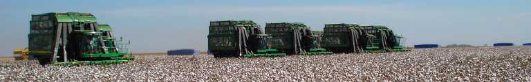

Estatísticas
O menu Estatísticas - Números do algodão é uma proposta da Abrapa para agregar a este portal uma valiosa ferramenta de informação e análise, de suma importância para pesquisadores, mas também uma fonte de subsídios para orientação e monitoramento dos investimentos do cotonicultor brasileiro.
Dados históricos de área, produção e produtividade, oferta e demanda, importação e exportação, evolução de preços e uma grande quantidade de dados adicionais estarão à disposição do visitante, de uma forma organizada e periodicamente atualizada.
Para facilitar a busca, os dados estão divididos em duas áreas:
Algodão no Brasil
Nas últimas três safras, com volume médio próximo de 1,7 milhão de toneladas de pluma, o país se coloca entre os cinco maiores produtores mundiais, ao lado de países como China, Índia, EUA e Paquistão.
O Brasil é o terceiro país exportador e o primeiro em produtividade em sequeiro. O cenário interno também é promissor: somos o quinto maior consumidor, com quase 1 milhão toneladas/ano.
Dados disponíveis
- Área, produção e produtividade
- Área, produção e produtividade nos estados associados
- Distribuição do algodão no Brasil
- Exportação brasileira de algodão - Principais países importadores
- Balança comercial brasileira do algodão
- Oferta e demanda brasileira de algodão
- Custo de produção estimado
- Indicador de preços
- Médias mensais nominais de preços
A maioria dos dados são extraídos de relatórios mais elaborados, que são disponibilizados no menu Biblioteca.

Algodão no Mundo
O algodão está entre as mais importantes culturas de fibras no mundo. Todos os anos, uma média de 35 milhões de hectares de algodão é plantada por todo o planeta. A demanda mundial tem aumentado gradativamente desde a década de 1950, a um crescimento anual médio de 2%.
O comércio mundial do algodão movimenta anualmente cerca de US$ 12 bilhões e envolve mais de 350 milhões de pessoas em sua produção, desde as fazendas até a logística, o descaroçamento, o processamento e a embalagem.
Atualmente, o algodão é produzido por mais de 60 países, nos cinco continentes. Cinco países – China, Índia, Estados Unidos, Paquistão e Brasil – despontam como os principais produtores da fibra.
Dados disponíveis
- Produção mundial
- Exportação mundial
- Importação mundial
- Consumo mundial
- Oferta e demanda mundial
- Principais países produtores
- Série de preços atuais e estimativa
A maioria dos dados são extraídos de relatórios mais elaborados, que são disponibilizados no menu Biblioteca.
Sinda
Associação Brasileira dos Produtores de Algodão
SAF/Sul - Quadra 02, Lote 02, Bloco B, 2º andar, Sala 202, Edifício Via Office - Brasília-DF - CEP 70070-600